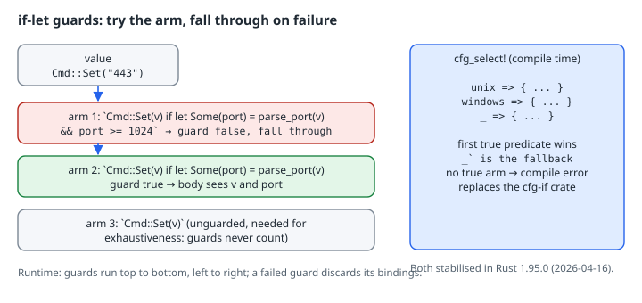

if-let Guards and cfg_select!
if-let Guards and cfg_select!
Thesis
Rust 1.95 stabilised two small features that remove a lot of everyday boilerplate:
- if-let guards let a
matcharm bind and test in its guard:Pat if let Some(x) = f(y) && x > 0 => …. If the guard fails, matching falls through to the next arm, just like a plainifguard. cfg_select!is a compile-timematchovercfgpredicates. The first arm whose predicate is true is expanded, and_is the fallback. It does the job thecfg-ifcrate has done for years, with no dependency.
Both have one sharp edge. The compiler doesn’t count guards towards exhaustiveness, and a cfg_select! where no arm is true is a hard error.
Mental model

= 1024: the guard is false, so it falls through. Arm 2 is Cmd::Set(v) if let Some(port) = parse_port(v): the guard is true and the body sees v and port. Arm 3 is an unguarded Cmd::Set(v), needed for exhaustiveness because guards never count. A note says guards run top to bottom and a failed guard discards its bindings. Right: cfg_select! is evaluated at compile time with arms unix, windows and _. The first true predicate wins, _ is the fallback, no true arm is a compile error, and it replaces the cfg-if crate. Both were stabilised in Rust 1.95.0 on 2026-04-16.">An if-let guard runs after the arm’s pattern has matched. It can use the pattern’s bindings, introduce new ones, and chain more conditions with && (the same let-chain grammar that was stabilised for if in Rust 1.88). The new bindings are in scope only in that arm’s body. If any part of the chain fails, those bindings are dropped and the next arm is tried.
Worked example
Verified with rustc 1.99.1, edition 2024, on x86-64 Linux.
// cfg_select! picks the first arm whose predicate holds; `_` is the fallback.
cfg_select! {
unix => {
fn platform() -> &'static str { "unix" }
}
windows => {
fn platform() -> &'static str { "windows" }
}
_ => {
fn platform() -> &'static str { "other" }
}
}
// It also works in expression position.
fn word_size() -> u32 {
cfg_select! {
target_pointer_width = "64" => 64,
target_pointer_width = "32" => 32,
_ => 0,
}
}
#[derive(Debug)]
enum Cmd {
Set(String),
Del(String),
}
fn parse_port(s: &str) -> Option<u16> {
s.parse().ok()
}
// if-let guards: bind inside the guard, and fall through to later arms if it fails.
fn describe(cmd: &Cmd) -> String {
match cmd {
Cmd::Set(v) if let Some(port) = parse_port(v) && port >= 1024 => {
format!("set unprivileged port {port}")
}
Cmd::Set(v) if let Some(port) = parse_port(v) => format!("set privileged port {port}"),
Cmd::Set(v) => format!("set non-numeric value {v:?}"),
Cmd::Del(k) => format!("delete {k}"),
}
}
// The same logic before Rust 1.95: the binding has to move into the arm body,
// and the fall-through has to be duplicated by hand.
fn describe_old(cmd: &Cmd) -> String {
match cmd {
Cmd::Set(v) => match parse_port(v) {
Some(port) if port >= 1024 => format!("set unprivileged port {port}"),
Some(port) => format!("set privileged port {port}"),
None => format!("set non-numeric value {v:?}"),
},
Cmd::Del(k) => format!("delete {k}"),
}
}
fn main() {
println!("platform={} word_size={}", platform(), word_size());
for c in [
Cmd::Set("8080".into()),
Cmd::Set("443".into()),
Cmd::Set("abc".into()),
Cmd::Del("x".into()),
] {
assert_eq!(describe(&c), describe_old(&c));
println!("{c:?} -> {}", describe(&c));
}
}cargo run -qplatform=unix word_size=64
Set("8080") -> set unprivileged port 8080
Set("443") -> set privileged port 443
Set("abc") -> set non-numeric value "abc"
Del("x") -> delete xThe assert_eq! in main checks that the guarded version and the pre-1.95 nested version agree on every input. The difference is shape. In describe_old, everything about Set has to live inside one arm, so other variants can’t be interleaved by priority. In describe, each arm states exactly what it needs.
cfg_select! appears twice: once at item level, choosing which fn platform to define, and once in expression position, as the tail of word_size. Expression-position arms are separated by commas and take a plain expression. Item-level arms take a braced block of items.
The traps
Both mistakes below are in one file so you can see the real diagnostics:
cfg_select! {
windows => {
fn platform() -> &'static str { "windows" }
}
}
enum Cmd {
Set(String),
Del(String),
}
fn describe(cmd: &Cmd) -> String {
match cmd {
Cmd::Set(v) if let Ok(port) = v.parse::<u16>() => format!("port {port}"),
Cmd::Del(k) => format!("delete {k}"),
}
}
fn main() {
println!("{} {}", platform(), describe(&Cmd::Del("x".into())));
}error: none of the predicates in this `cfg_select` evaluated to true
--> src/main.rs:1:1
|
1 | / cfg_select! {
2 | | windows => {
3 | | fn platform() -> &'static str { "windows" }
4 | | }
5 | | }
| |_^
error[E0425]: cannot find function `platform` in this scope
--> src/main.rs:20:23
|
20 | println!("{} {}", platform(), describe(&Cmd::Del("x".into())));
| ^^^^^^^^ not found in this scope
error[E0004]: non-exhaustive patterns: `&Cmd::Set(_)` not covered
--> src/main.rs:13:11
|
13 | match cmd {
| ^^^ pattern `&Cmd::Set(_)` not covered
|
note: `Cmd` defined here
--> src/main.rs:7:6
|
7 | enum Cmd {
| ^^^
8 | Set(String),
| --- not covered
= note: the matched value is of type `&Cmd`
= note: match arms with guards don't count towards exhaustivity
help: ensure that all possible cases are being handled by adding a match arm with a wildcard pattern or an explicit pattern as shown
|
15 ~ Cmd::Del(k) => format!("delete {k}"),
16 ~ &Cmd::Set(_) => todo!(),
|- No true arm. This is deliberate.
cfg_select!won’t silently expand to nothing, so a missing platform is a compile error on that platform rather than a confusing “cannot find function” later. (You get that second error too, as a knock-on.) Add a_ =>arm whenever a fallback makes sense, and use_ => { compile_error!("…") }when it doesn’t, so the message is yours. - Guards don’t count. Even though
v.parse::<u16>()is eitherOkorErr, the compiler doesn’t reason about guards. The Rust 1.95 release notes state this explicitly. Always finish a run of guarded arms with an unguarded arm for the same pattern (or_). Don’t take the help text’stodo!()literally.
Migrating from cfg-if
The cfg-if crate’s if #[cfg(unix)] { … } else if #[cfg(windows)] { … } else { … } maps one to one onto cfg_select! { unix => { … } windows => { … } _ => { … } }. Before you drop the dependency, check two things:
- MSRV.
cfg_select!needs Rust 1.95. If you publish a library with a lowerrust-version, keepcfg-ifuntil you raise it. - Expression position.
cfg-ifonly expands to items.cfg_select!also works as an expression, solet x = cfg_select! { … };replaces the common#[cfg]+#[cfg(not)]pair ofletstatements.
Try this
- Add
target_os = "linux" => "linux",as the first arm of a new expression-positioncfg_select!, and confirm that the more specific arm wins overunixwhen it comes first. - Rewrite one of your
match+ nestedif letblocks with an if-let guard, and keep anassert_eq!against the old version, as above, until the tests pass. - Delete arm 3 (
Cmd::Set(v) =>) fromdescribeand read the E0004 note.
Sources
- Announcing Rust 1.95.0: https://blog.rust-lang.org/2026/04/16/Rust-1.95.0/
cfg_select!in the standard library docs: https://doc.rust-lang.org/std/macro.cfg_select.html- The Rust Reference, match guards: https://doc.rust-lang.org/reference/expressions/match-expr.html#match-guards
- The Rust Reference, conditional compilation (
cfgpredicates): https://doc.rust-lang.org/reference/conditional-compilation.html